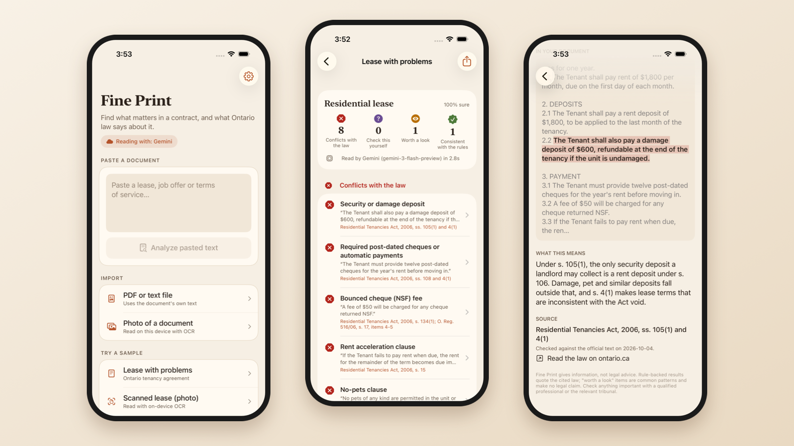
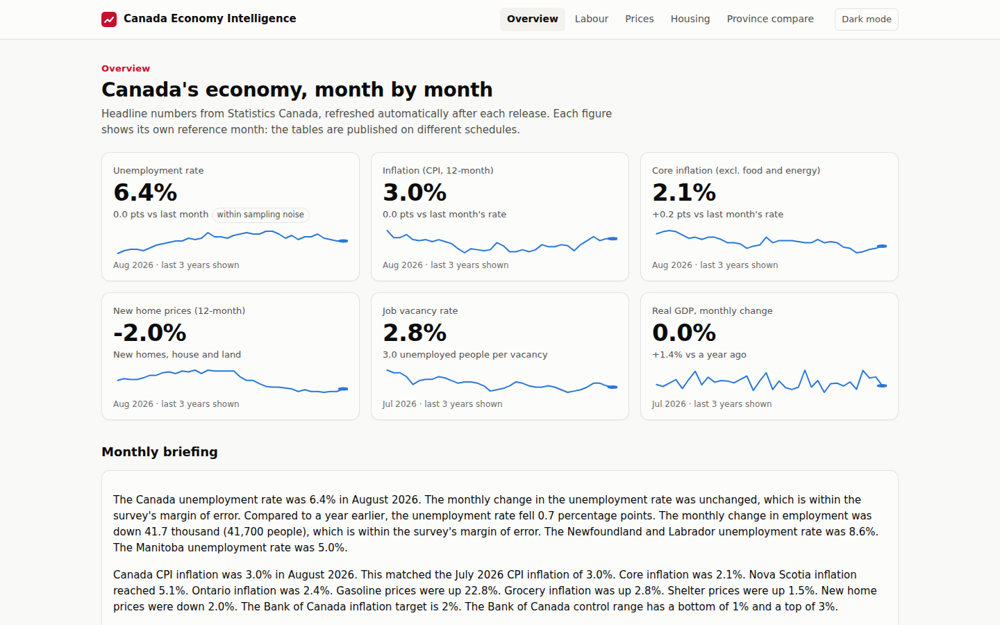
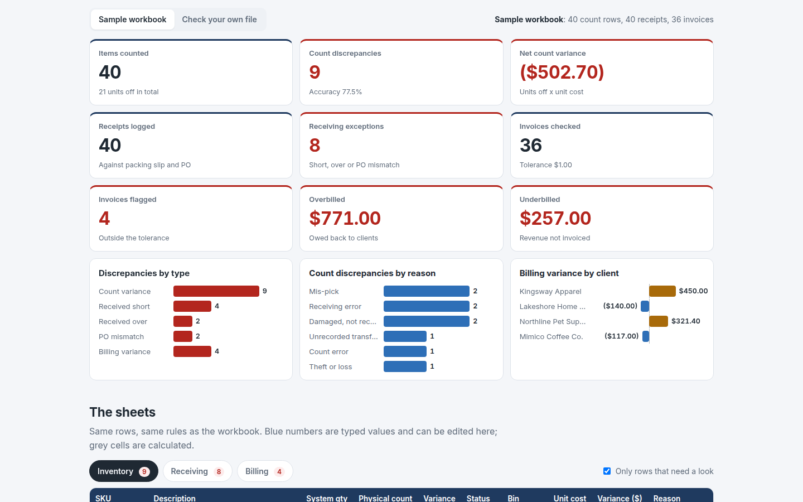
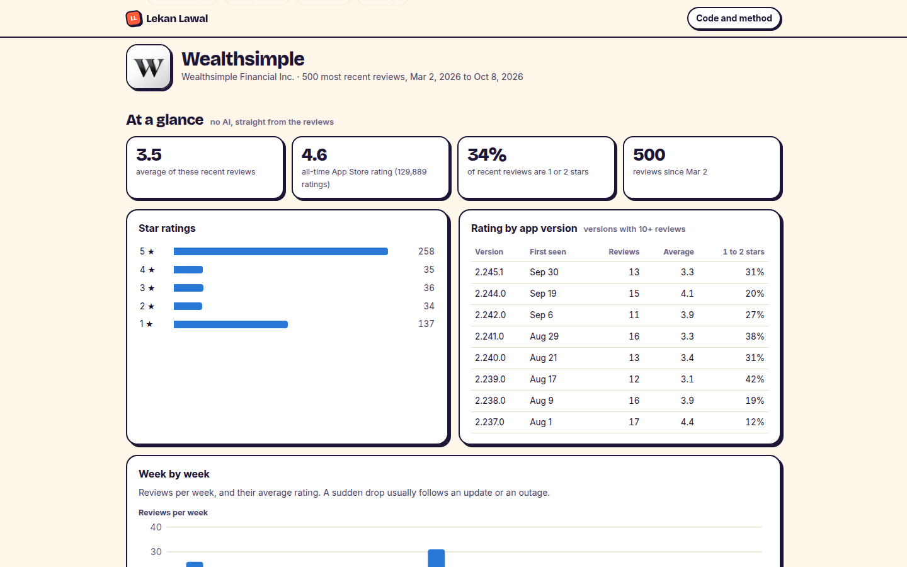

I turn messy data into decisions, and AI into tools people can trust.
Computer Science graduate, Trent University 2026. I build dashboards that find where profit leaks, pipelines that survive real-world data, and AI that gets checked before anyone relies on it.
Six builds. Click into any of them.
An iOS app that checks contracts against Ontario law, a self-refreshing economic data platform, an Excel tool for warehouse audits, a sales dashboard for your own data, an App Store review analyzer, and a football stats agent that turns plain English into checked SQL. Every one of them has something you can use right now.

Fine Print: iOS Contract Checker
Paste a lease or job offer and it shows which clauses Ontario law has already made void, with the section of the law for each. The AI only reads and quotes; code checks every quote and label before a written rule decides. Zero wrong legal verdicts across a 12-document test set built to trip it up. It's an iPhone app, and you can now try it on your own document in the browser.

Canada Economy Intelligence Platform
Canada's economy by province, updated by itself every time Statistics Canada publishes. Enter what you spend in a month and it works out your own inflation rate and why it differs from the official one. The math is checked against StatCan's: official spending in, official inflation out. 89 automatic checks run before every update.

Shipment and Inventory Discrepancy Checker
An Excel workbook for warehouse and 3PL operations that checks cycle counts against the system, receipts against the packing slip and PO, and storage invoices against the rate card, then totals every exception on one dashboard. The browser version reads the same workbook, lets you edit counts and watch the checks update, and checks your own file without uploading it.

Money Snitch
Two money checks for a small business, in your browser. Drop in a sales export to see where the profit goes: the discount cliff, products that lose money, margin month by month, with the SQL behind every chart. Or drop in a card processing statement: every fee is checked against the card networks' published rates and sorted into what's fixed and what your processor keeps, which is the part you can negotiate.

App Review Insights
Pick any iPhone app and see what its users love, hate and ask for, from its latest App Store reviews: ratings by week and by version, plus AI themes where every quote is checked against the real review. Wealthsimple's recent reviews average 3.5 stars, not the 4.6 it shows.

Football Stats Agent
Ask a football question in plain English, like who made the most tackles in the last 20 minutes of games, and an AI writes the SQL that your own browser runs on 1,853 matches of event data. The query is always shown. It asks when a question is vague, declines what the data can't answer, and stopped all 12 attacks in its evaluation. Includes my own expected goals model.
About
I'm a Computer Science graduate from Trent University (2026) looking for data, BI and AI analyst roles in Canada. What I care about is the judgment layer: not just making a chart or calling an API, but knowing why each cleaning decision was made, what a model's honest ceiling is, and what a business should actually do differently on Monday.
One idea runs through all of them: the AI proposes, code checks. The app review analyzer checks every quote its AI picks. The football agent's SQL is checked twice and run in the open, so every number can be verified. Fine Print takes it to an iPhone app: the AI reads and quotes, and code decides. The Canada Economy platform puts it into production, and the Discrepancy Checker brings it to the warehouse floor in the tool operations teams already use: Excel.
Languages and data
Python · SQL · JavaScript · pandas · DuckDB · scikit-learn · statsmodels
BI and visualization
Excel (INDEX/MATCH, SUMIFS, conditional formatting, data validation) · Power BI · Tableau · Plotly · dashboard design
Web and cloud
React · Firebase · Streamlit · GitHub Pages · GitHub Actions (CI and scheduled pipelines)
AI tooling
Gemini API (structured output, guardrails) · Claude · ChatGPT · prompt engineering and evaluation
Got messy data?
Let's talk.
Open to data analyst, BI analyst and AI solutions roles in Canada.